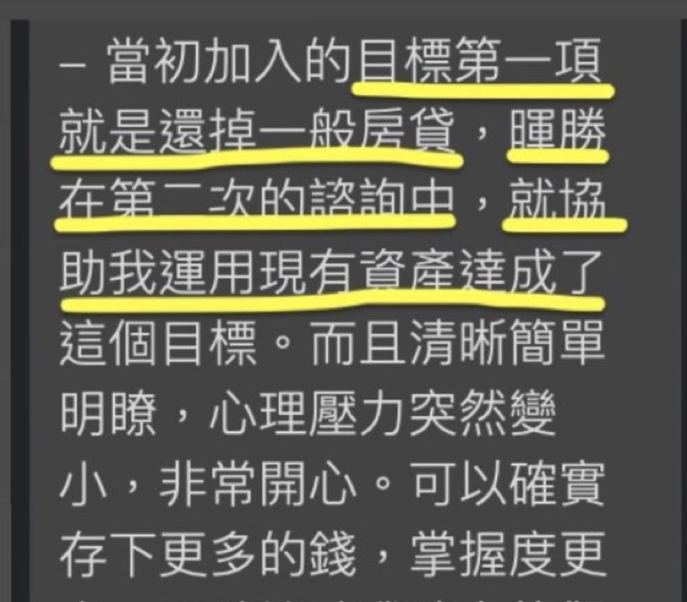
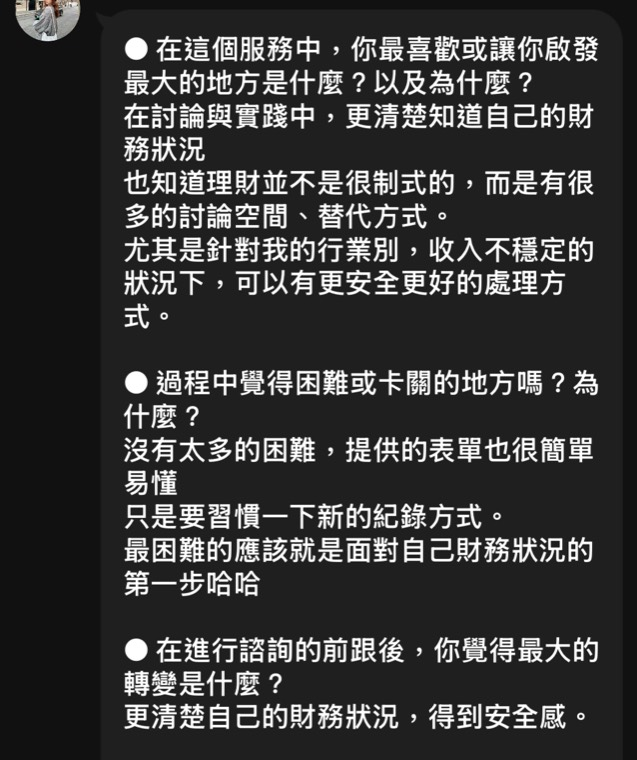
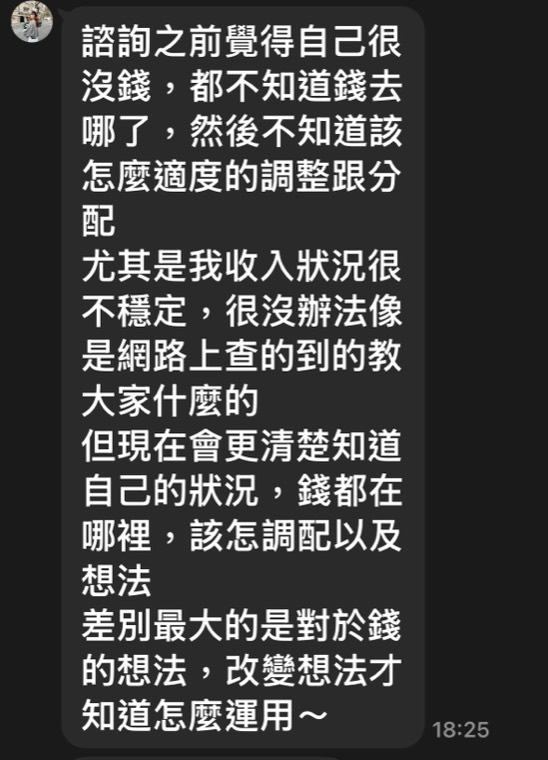
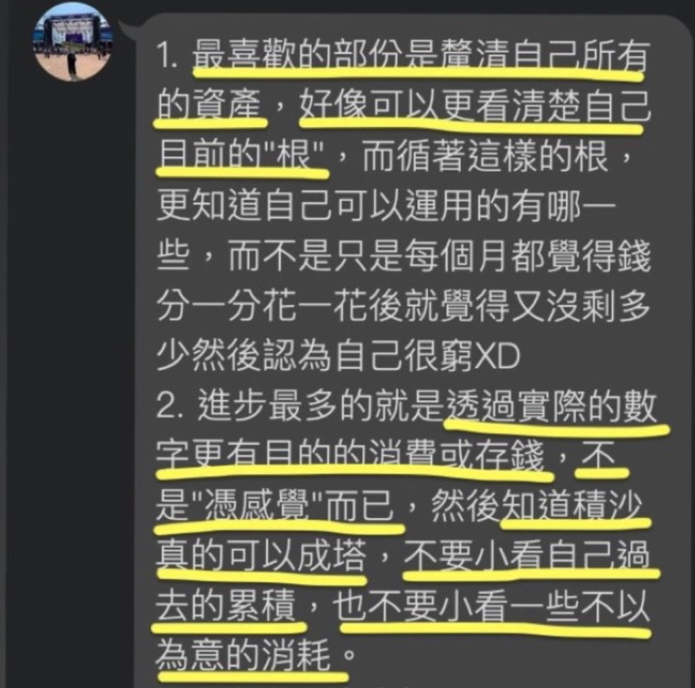
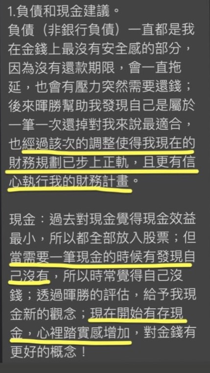
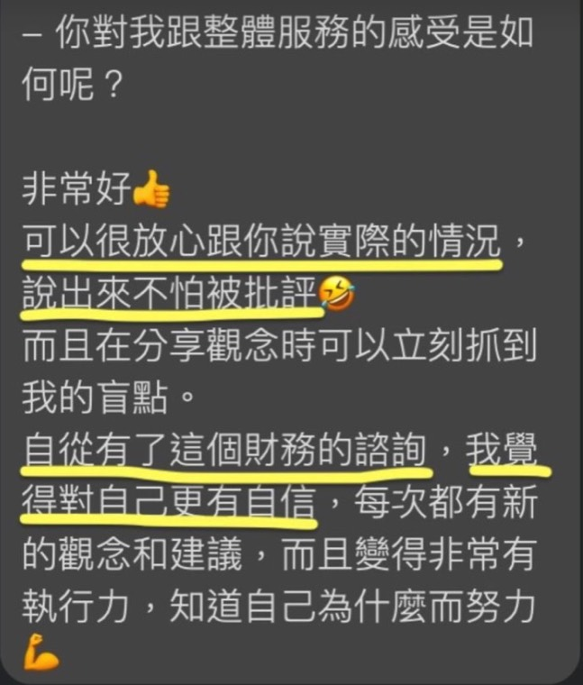
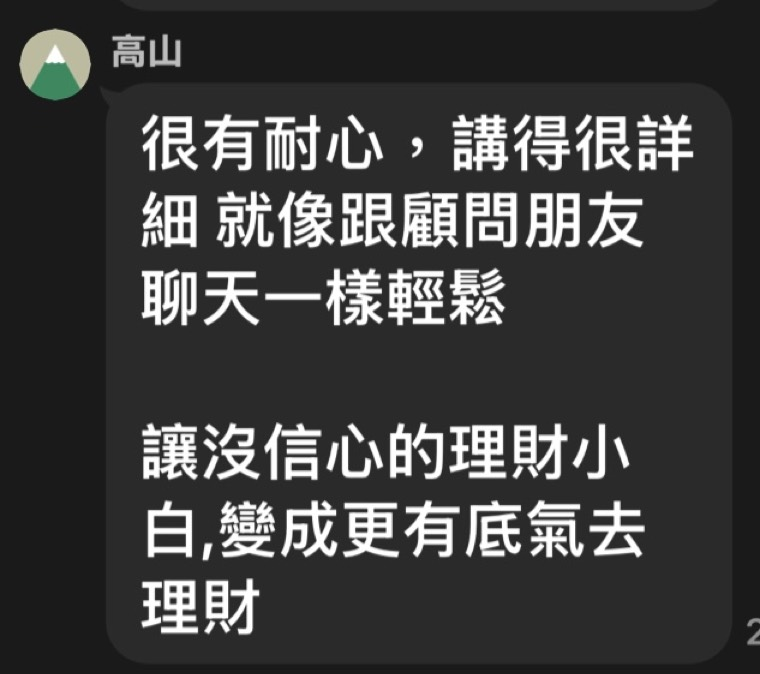
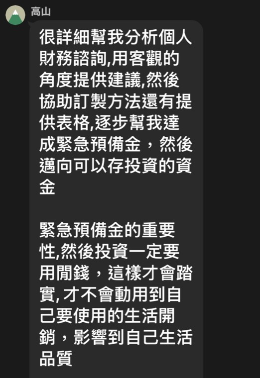
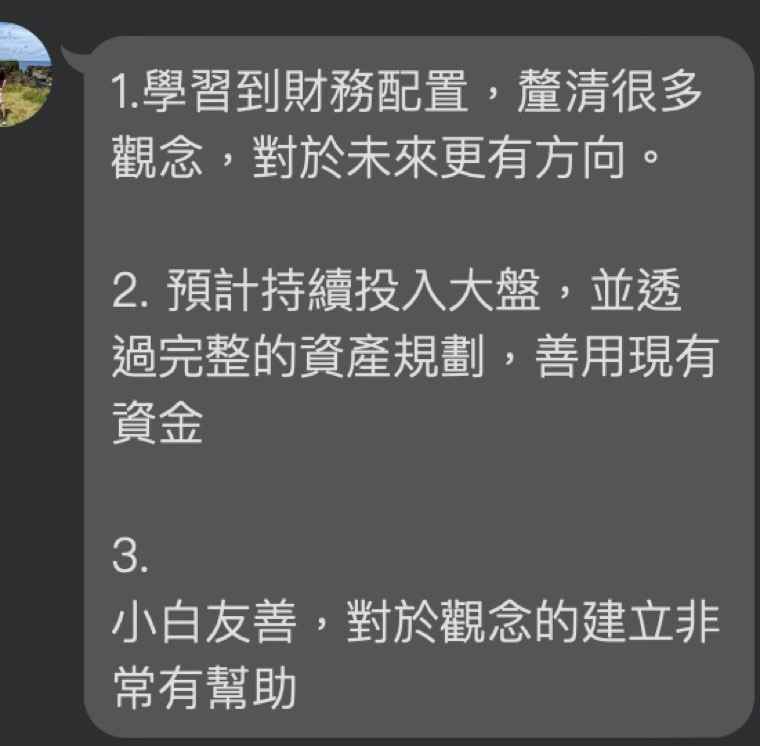
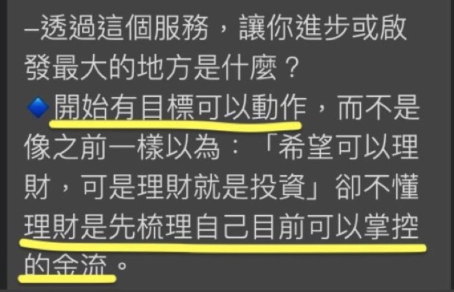

你不是沒錢，
你是不知道錢去哪了。
三個月後，你不會變成投資高手。
你會變成「掌握自身財務狀況」的人。
對於財務決定有判斷，有底氣。
而且第一次諮詢，就讓你的第一筆投資開始扣款。
你不用再學更多理財知識，
只要說出一個「確定做得到」的金額，我們當天就設定好。
你缺的不是理財「方法」，
而是沒有先梳理自己的財務現況。
以終為始，先開始投資累積資產，接著學習掌握金流
不是回家想想，不是下次再說。
是那一個小時裡，就完成。
你說多少，我們就設多少。 1,000 元也可以 那是券商 App 的下限，不是我的下限。
因為我看過太多人：花了錢上課，上課當下超熱血，回到現實卻什麼都沒發生。
原因就是卡在一句話——「我回家盤點一下、算清楚再開始」。
所以我們反過來做。這套做法我叫它「先跑再算」——先讓行動發生，再回頭把帳算清楚。當你手上有一筆真的在扣的錢，接下來兩次諮詢才有東西可以調整——而不是又一次紙上談兵。
📌 為了讓這件事當天就能完成，報名後我會請你先把證券戶開好，並先填一份簡單的行前準備表單，讓我們第一次碰面就能有成果。
📌「先跑再算」的順序是刻意的：行為先於分析。
先梳理支出再行動的做法，實際上會卡死在「還沒開始記帳」。
每月一次，先開始、中調整、後習慣養成
帶走能用一輩子的財務儀表板
資產負債盤點與優化
不用等到下次諮詢
以下皆為真實學員回饋，已去識別化處理










← 左右滑動看更多 →
不是只有「上完課」，是你自己有能力做到這兩件事：
連續三個月，每個月自動扣。不是靠自律，而是建立「我有投資習慣」的身份認同。
知道每個月的錢流去哪、自己的資產負債長什麼樣、緊急預備金該存多少。
這些能力會陪你一輩子。
陪你走三個月的理財教練，分享我走過的路，避開我踩過的坑
這個計畫不是給所有人的。以下情況，請先不要報名
先讓行動發生，再回頭把帳算清楚。
我理解。先講一個我自己整理資料時看到的事——
我訪談過的人裡面，有人花十幾萬上房地產課、有人在期貨和虛擬貨幣賠掉數十萬。上課當下能量都很高，但回到現實之後，多數人沒有任何一件事真的發生。
8,000 元買的不是三小時的知識，是三個月裡真的有人盯著你——中間你隨時可以 LINE 我，不限次數。而且第一次諮詢結束你就會有一筆真的在扣的投資，跟一份開始記錄的表。
如果第一次結束你覺得不值得，全額退費。
恭喜你畢業了，我不會綁著你。你會養成投資習慣、並依照預算執行，時間就會幫你把資產累積。而且你手上會有一份自己看得懂的《財務全貌表》，那是你接下來每一年都還在用的工具。
如果之後你覺得速度不夠快、想要加速，我還有一套進階的做法叫「槓桿接力法」——用低利負債，把未來的錢提早變成今天的本金，讓複利提早開始。
但那個方法有風險，也有門檻。你要先做到兩件事：定期定額連續滿 6 個月不中斷、緊急預備金到位。
到那時候有興趣再來找我就好。